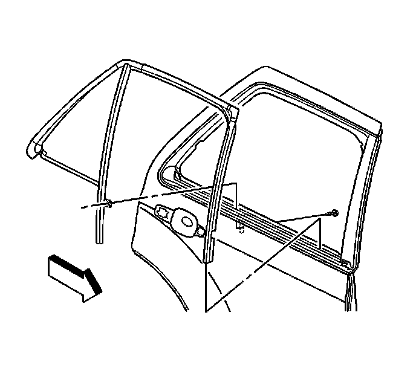

Rear Side Door Stationary Window and Front Channel Replacement
Rear Side Door Stationary Window and Front Channel Replacement
Removal Procedure

1. Lower the window to the full down position.
2. Remove the door trim panel. Refer to Rear Side Door Trim Panel Replacement (Service and Repair) .
3. Remove the water deflector. Refer to Rear Side Door Water Deflector Replacement (Service and Repair) .
4. Remove the window inner belt sealing strip. Refer to Rear Door Window Belt Inner Sealing Strip Replacement (Rear Door Window Belt Inner Sealing Strip Replacement) .
5. Remove the window. Refer to Rear Side Door Window Replacement (Service and Repair) .
6. Remove the window outer belt sealing strip. Refer to Rear Door Window Belt Outer Sealing Strip Replacement (Rear Door Window Belt Outer Sealing Strip Replacement) .
7. Pull the window weatherstrip out of the door header.
8. Remove the stationary window post bolt.
9. Remove the window weatherstrip from the door header all the way back to the division post.
10. Grasp the division post and pull forward in order to remove the rear door stationary window from the door.
Installation Procedure
1. Lubricate the rearward edge of the stationary window with a soap and water solution to ease the installation into the door frame.
2. Align the locator latch to the rear of the door frame.
3. Seat the stationary window assembly rearward into the door frame.
Notice: Refer to Fastener Notice (Fastener Notice) .
4. Install the stationary window post bolt.
Tighten the bolt to 9 N.m (80 lb in).
5. Install the window weatherstrip into the door frame.
1. Insert the upper forward corner into the door frame.
2. Install the upper portion of the weatherstrip into the door frame.
3. Working downward from the center-pillar install the remainder of the window weatherstrip.
6. Install the window. Refer to Rear Side Door Window Replacement (Service and Repair) .
7. Install the window outer belt sealing strip. Refer to Front Side Door Window Belt Outer Sealing Strip Replacement (Front Side Door Window Belt Outer Sealing Strip Replacement) .
8. Install the window inner belt sealing strip. Refer to Rear Door Window Belt Inner Sealing Strip Replacement (Rear Door Window Belt Inner Sealing Strip Replacement) .
9. Install the water deflector. Refer to Rear Side Door Water Deflector Replacement (Service and Repair) .
10. Install the door trim panel. Refer to Rear Side Door Trim Panel Replacement (Service and Repair) .